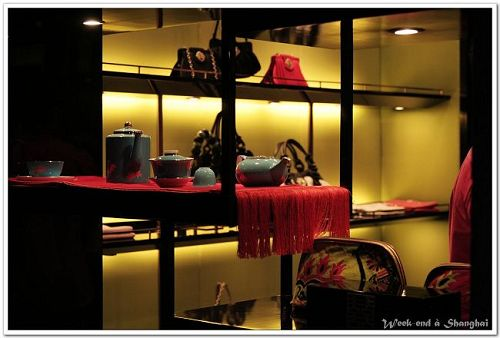
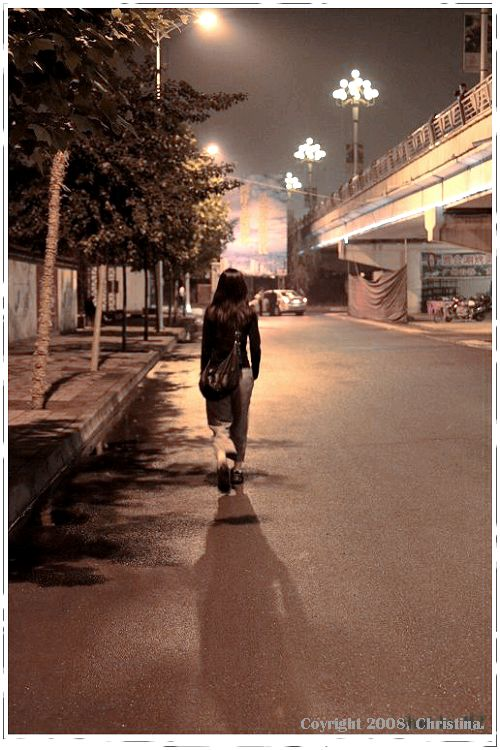

老矣心态。 @ Jun 02, 2008
整个周末感觉都在开车，开到令人发指的地步，今生都不想再开车了，想来受身体的影响，累到四脚朝天，丝毫没有快感。二十几岁总想从这个城市流浪出去，现在却时刻都在想念这个城市。总之厌恶之极扎堆的环境，这就是我老矣的心态。





整个周末感觉都在开车，开到令人发指的地步，今生都不想再开车了，想来受身体的影响，累到四脚朝天，丝毫没有快感。二十几岁总想从这个城市流浪出去，现在却时刻都在想念这个城市。总之厌恶之极扎堆的环境，这就是我老矣的心态。

A：给你个连接，算命的。
C：哦。
A：我的前生是武士，你呢？
C：皇帝。
A：现在呢？
C：皇后。
A：靠，你还真自恋。
C：恩，皇帝爱皇后。
1、早晨打开一个又一个BLOG连接，除了写政治写口号写技术写大道理以及买弄耍二五的，我会被那些记录着每日生活琐碎、点滴情感思想的BLOG所吸引。甚至能看到前一个晚上他或她坐在灯下，面对电脑屏幕记录着什么，那一种温润的形象可以与网络另一端的人瞬间熟悉而亲近。有点神奇的体会，庆幸自己还持续拥有记录BLOG的习惯，因此拥有更多更好的BLOG可以阅读；
2、一对刚结婚的小夫妻，新房是老式居民楼内一套两室一厅，重新装修了一下，很简单，都是生活基本必需品，没有什么装饰摆设。新娘用大果粒酸奶杯种了8、9棵植物，书架上零散放着一些日语学习的书。一问才知道不爱说话的新娘喜欢日本动漫和日本游戏，所以自学日语，听力口语不行，但动漫和游戏上的日语完全可以应付。问他们去哪里新婚旅行？新郎说：“她要攒钱去日本看樱花，明年春天吧。”心里轻轻地被触动了一下......有这样一些人，不管外面世界如何变化，他们只沉浸在自己的世界里，世俗的东西影响不了他们......知足常乐。
五点半就起床了，敢情这辈子都没起这么早过。
六点四十到奥体中心，打算将Maxime和Emily托付给朋友就到公司继续呼觉。
没想到那里人山人海，短短的路需要走好久。
最不喜欢扎堆的我只好在那里干等。
听说昨天晚上奥体中心附近就有成群的警察执勤了，好些年轻人还露宿在奥体大街上。
本以为7点江东大道才会封闭，结果6点多就封闭了。
不明白这么多人聚集着能看到些什么？回家看转播比这里清楚去了。
也许生活太需要热情这东西了~
因为没打算去那么多人的地方看火炬传递，所以没带相机，以下照片均为手机拍摄
奥体中心东大门，火炬传递的起点。

托举着看火炬

Maxime只有将Emily托起才能拍到火炬传递的景象。
最不思议的是很多陌生人会拍Maxime和Emily，甚至找他俩合影。更有甚者一大群女孩子各自举着相机同时在拍Maxime和Emily，好象追星族似的（外星人），呵呵~~

和大帅哥恐龙在国旗前，早知如此我就不会穿着上班服了，而应该换件体恤衫。

人潮、体恤儿、贴画...只为目睹火炬传递的几分钟~

人多吧，这边人更多

每个人都有讨厌自己的时候吧，比如此时我真讨厌自己这种造型~


终于看到火炬和火炬手了

人潮散去，很快...

今天看完洪晃写的BLOG《劳动真的很光荣吗？》 “在外企，特别是很有名的外国大公司，外国老板总是在给中国员工洗脑，先是教育你什么叫本公司的“work ethic”, 其实就是我们说的工作态度，口口声声说是我们对消费者负责，实际上就是怕中国人不好好干活儿。除了工作态度，外国老板还有很多“胡萝卜”在中国雇员面前晃来晃去——出国培训、晋职晋薪、年底奖金等等，这都是外国人发明的诱惑人多劳动的手段。而实际上，只要你进了一个大外企的办公室，你就会发现，那中国雇员一个个忙得跟蚂蚁差不多，可是那些老外管理人员都悠哉游哉，有的在上中文课，有的在看祖国的报纸，还有的干脆锁了门跟自己某个漂亮下属干起来了。”
我们公司三四年前中老年职员还算多的时候，公司频频进年轻的新人，那时侯哪个外贸公司还能见着中老年职员，感觉有点怪了。当这些中老年人渐渐消失于职业的舞台，公司的Leader却说：“你们的工作完全可以由一个月薪两千元左右的中年妇女取代。”
领导想让你做这件事，不想让你做那件事，都能说出100条理由。
比如说女性出差不方便、照顾家庭更多些等等诸如此类的言辞时，我们是不是可以理解成职业上的性别歧视？或者希望将大部分职场女性变成公司的“全职太太”？总有那么些人希望多拿钱少做事，挑肥拣瘦，轻松风光的工作自己做，擦屁股的工作以一句“忙不过来”扔给别人，那是工作的技巧。总有那么些人，一边喊着忙一边上班时间看着网上新闻，出差的时候吃喝玩乐。复杂的不是工作，是人心。谁还看不惯这些事，谁幼稚。
去店里捏脚，河南MM主动聊起她们的工作生活，好个快乐呀，干的好可以拿到4000多元一个月，一般的也有两千多，老板管吃管住。比咱这儿的助手拿的多了去了。回头想想取代我们的中年妇女一月给2000，一定没有人家捏脚的河南MM过得开心。
越堂皇的理念越经不起独立思想的检验，听了太多之后才知道好些道理总是拿来糊弄别人。所有的美好都可能被有心人利用以谋私利。老子说：大道废，有仁义。所以别太在乎别人说什么，诚实对自己。（新浪某网友）
敬佩王老板和老罗前往四川救灾，加油啊！我们会一直关注的，同时保重身体！
对于我们这些上班族除非辞职，那好象不理智。
地震过后，我们是否应该思考一下自己的生活方式？
如果某天南京也遭遇天灾，我庆幸自己......我一定后悔......
老罗BLOG上看到这篇：
『天涯杂谈』对比“中国地震后美国网友的评论 和 美国龙卷风后中国网友的评论”
如此爱国，实在是让人寒心！
每天中午和晚上看央视24小时不间断播报灾区救援情况，想到灾区做一名志愿者的想法就越强烈。南京除了派出一行医疗队之外还有个人组织的旅友前往四川救助，我们南京出的力太少，最令人难以接受的是我们公司70多个人，才捐出1万多人民币，还是硬性要求的，简直.....人心淡漠......与之前我对这里的看法很相符，不知整个集团能捐出多少？为灾区提供哪些帮助？这时候，最可爱的仍然是人民解放军。别人问我：“你去做志愿者能干些什么啊？”能做什么就做什么，搬运伤员照顾伤员，清理废墟......想到电视中的画面内心就不安。看到昨晚有个官员在播报中还自得的说自救成功的灾民是因为相关部门防震知识普及工作做的好、受灾程度比预想情况要好等等屁话时，我就想上去煽他，救助成功与死亡的人数相比究竟占多少比率？目前还是未知数。灾情还未结束，就开始歌功颂德了，憎恶播报中时不时出来些空洞的口号，人民关心的不是这些。
雪灾：1月25日；
西藏打砸抢烧：3月14日；
四川地震：5月12日；
有没有发现每一组数字相加都等于“8”？
有人补充说5月12日距离奥运会8月8日开幕还有88天。
数字的魔力使心脏顿时下垂....
中国的2008年还会发生什么？
祈求中国平安顺利的度过这一年！！！
I was living just a fantasy
so many things ever I found a feeling that's true
you don't know what i've been going through
but I know that you don't know what
I said I'm feeling it
I'm feeling it
I'm feeling it
......

才回南京，就遇上地震。
据国家地震台网测定，2008年05月12日14时28分04.0秒，在四川汶川县发生7.8级地震，这个震级相当于400颗广岛原子弹的能量！江苏共有13个旅游团在四川省内，约300多人。南京地震达4级，官方说南京的建筑可抵挡6级以下的地震，不用担心。汶川县及周边灾民昨夜会是非常痛苦的，电视上说那里地震过后晚上紧接着下了暴雨...
这次震级较大，最远可传到泰国的高层建筑，全球的地震仪都可收到地震后的震波信号。唐山地震在地下16公里处，汶川地震在地下28公里处，地震发生在龙虎山断裂带上，山区对于地震有一定的减震作用。专家估计汶川地震的损害程度要比唐山小。
当时我在走廊里用手机和Angie通话，一点震感也没有。之后听说新街口高楼已经疏散人群了；在CFC的Steven说大楼有晃动时他们公司的人全跑下去了，只有一个台湾人和日本人没跑；拿快件的人说他们在新街口工作的同事在10楼时感觉到晃动，必须得抓着固定的东西才不会摔倒，有恶心想吐的反应。据说上海浦东那边的广场上也站满了从写字楼里跑出来的人...晚上接到jiajialing、huzi和另一个朋友的慰问电话~
南京发生过三次较大的地震，最近的一次地震发生在1712年。
转载一篇《地震防护知识》
和医生做朋友是件很恐怖的事情。
当彼此还站在1米远的距离时，你已经没有外衣，你生理的隐私以及心情的隐私都被医生一览无余。且他们谈论起生理上的话题如同呼吸一样正常，他们询问你生理的细节现象与医院里那些生硬的看病医生没有区别，之后说出一些医学名词让人不知深浅，不仅暴露生理问题，最尴尬的是令彼此还未熟悉的人丝毫没有神秘可言。你哪里还有什么矜持和优雅，站在医生面前你就是一个赤裸裸的生理结构图。
从小就排斥医生，生活中更不会走近他们，现在真是应验了我之前的排斥不是毫无理由的。对方除了是医生同时还是朋友的话，那种感觉别提有多奇怪了！